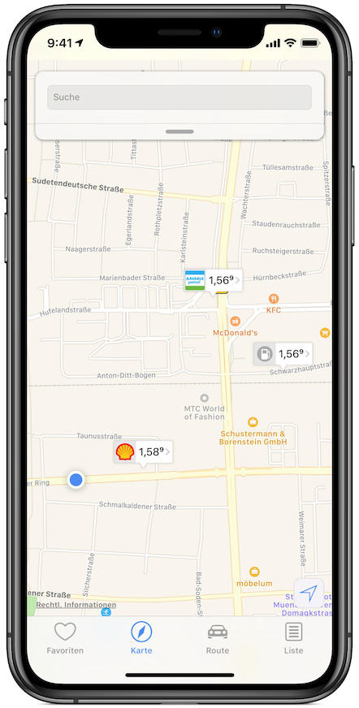
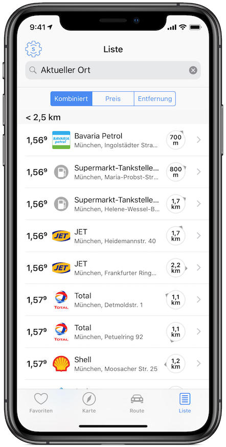

1-2-3 Tanken
1-2-3 Tanken
Endlich ist es soweit! Laden Sie sich jetzt die intuitiv zu bedienende 1-2-3 Tanken App kostenlos herunter und sparen sie ab sofort bares Geld.

Endlich ist es soweit! Laden Sie sich jetzt die intuitiv zu bedienende 1-2-3 Tanken App kostenlos herunter und sparen sie ab sofort bares Geld.

Mit der 1-2-3 Tanken App finden Sie auf einfachste Weise die jeweils aktuellen Spritpreise. Die dafür benötigten Daten melden die Tankstellen direkt an die Markttransparenzstelle für Kraftstoffe und wir leiten diese umgehend an Sie weiter.

Egal ob Sie Tankstellen in Ihrer Nähe oder in einer anderen Stadt finden möchten: In der Kartenansicht haben Sie alle wichtigen Informationen sofort im Blick.
Sie planen eine längere Strecke zu fahren und möchten auf dem Weg so günstig wie möglich tanken? Kein Problem! Geben Sie einfach Ihren Start- und Zielort an und 1-2-3 Tanken zeigt Ihnen die günstigsten Tankstellen auf Ihrem Weg an.

Sie möchten sofort sehen, wo es am meisten Sinn macht zu tanken? In der Listenansicht sehen Sie sofort, welche Tankstellen am günstigsten sind. Und damit Sie auf dem Weg zur Tankstelle nicht mehr Sprit verbrauchen als Sie am Ende sparen, sind alle Tankstellen nach Entfernung gruppiert.
Sie haben Tankstellen bei denen Sie bevorzugt tanken und wollen diese immer im Blick behalten? Mit der 1-2-3 Tanken App können Sie sich eine Liste von Favoriten anlegen. So haben Sie die Preise Ihrer Lieblingstankstellen immer im Auge.

Dank dem Preisalarm sind Sie jederzeit auf dem neusten Stand auch ohne die App zu öffnen. Stellen Sie einfach ein für welche Tankstellen und Spritsorten Sie über Preissenkungen informiert werden möchten. Sie erhalten dann eine Benachrichtigung direkt auf ihr iPhone sobald der Preis fällt.

Zu jeder Tankstelle können Sie interaktive Preisstatistiken aufrufen. Damit können Sie noch leichter den idealen Zeitpunkt zum Tanken bestimmen.

Mit dem 1-2-3 Tanken Widget für die Mitteilungszentrale können Sie jederzeit die Preise Ihrer Favoritentankstellen sehen ohne die App öffnen zu müssen.

1-2-3 Tanken ist auch für die Apple Watch verfügbar. Damit können Sie schnell und unkompliziert, direkt am Handgelenk, die Preise Ihrer Favoritentankstelle prüfen oder die günstigste Tankstelle in der Umgebung finden.